1. Introduction
After two introductory post-series (linear and logistic regression), we dive into a crucial topic that every machine-learning practitioner should be at least aware of: model selection.
Basically, we do not want our models to learn our data by heart and then to struggle to handle new unseen data samples. We want them to be great at generalizing.
We have introduced the bias and variance concepts in Part1 and the bias-variance dilemma, the model capacity, the training/testing split practice and learning curves analysis in Part2. We moved to the cross-validation and regularization techniques in Part3.
We now go through the Ridge regression implementation in Python from scratch (loss function and gradient descent algorithm), its application to a low-degree and high-degree model and its weight optimization with the validation curves.
2. Dataset generation
We first generate some data (Npnts=40) drawn from a 3-degree polynomial and add some noise controlled by the scale factor.
Please note that the input array xx does not contain equispaced points, but they have been randomly generated within the (-4, 4) interval.
def groundTruth(xx, scale=2):
ww = np.array([[-1, 8, -2, -1]]).T
xxPF = PolynomialFeatures(3).fit_transform(xx)
yy = xxPF.dot(ww) + scale*(np.random.randn(xx.shape[0], 1)-1)
return xxPF, yy
Npnts = 40
xx = np.sort(np.random.rand(Npnts,1)*8-4, axis=0)
xPF, yy = groundTruth(xx)
plt.figure()
plt.scatter(xx, yy, c='g', alpha=0.6)
plt.ylim([-40, 20])
(-40, 20)
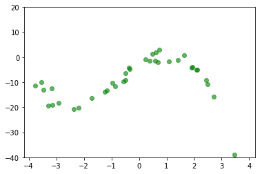
We set the matrix-shaped polynomial terms xPF and the ground-truth output yy as the training dataset and create test and validation sets drawn from the same distribution.
xTrain, yTrain = xPF.copy(), yy.copy()
xTest0 = np.sort(np.random.rand(int(Npnts/4),1)*10-5, axis=0)
xTest, yTest = groundTruth(xTest0)
xVal0 = np.sort(np.random.rand(int(Npnts/4),1)*10-5, axis=0)
xVal, yVal = groundTruth(xVal0)
The dataset consists of 40 data-points.
Each input has four components (one term per degree plus the bias).
xTrain.shape, yTrain.shape
((40, 4), (40, 1))
3. Ridge loss function and gradient descent algorithm
We implement the Ridge loss function with a vectorized structure.
Have a look at this section of the series’s previous post for more details about the theory.
The loss J is the sum of two terms:
- the actual error of the model, as the sum of the squared error of each example (along the first axis,
axis=0). - the Ridge regularization term, weighted by the $\lambda$ factor,
lmbd, that sums up all the squared parameters’ values, but the biases. That’s why it starts indexing the parameter arraywwfrom1.
Let’s initialize the weights and calculate the Ridge loss on the training set.
def lossRidge(XX, YY, ww, lmbd=0):
Npnt = XX.shape[0]
J = (np.sum((np.dot(XX, ww) - YY)**2, axis=0) + lmbd*np.sum(ww[1:]**2))/2/Npnt
return J
wInit = np.array([1, 1, 1, 1]).reshape(-1, 1)
loss = lossRidge(xTrain, yTrain, wInit)[0]
print('The loss of the regularized model for the initial parameters ({}) is {}'.format(wInit.T, loss))
The loss of the regularized model for the initial parameters ([[1 1 1 1]]) is 791.5828825701652
We update the gradient descent algorithm by adding the second term related to the penalty.
Please note the first element is set to 0 due to the penalty definition that ranges from 1 to the end of the parameter vector.
def gradDescRidge(XX, YY, ww, lmbd=0, lr=0.001, Nepoch=1500):
Npnt = XX.shape[0]
degree = wInit.size-1
Jevol, wevol = [], []
for _ in range(Nepoch):
Jevol.append(lossRidge(XX, YY, ww, lmbd))
wevol.append(ww[:,0])
ww = ww - lr*(np.mean((np.dot(XX, ww) - YY) * XX, axis=0).reshape(-1,1) + lmbd/Npnt*np.vstack(([0],ww[1:])))
return np.array(wevol), np.array(Jevol)
We apply the gradient descent algorithm for Nepoch=50000 steps, with a quite small learning rate lr and inactive regularization (lmbd=0).
The weights used to generate the ground-truth are [-1, 8, -2, -1].
The bias is not that accurate, but the total loss is within the scale of the generated-data noise.
Nepoch, lr, lmbd = 50000, 0.0001, 0
wEvol, Jevol = gradDescRidge(xTrain, yTrain, wInit, lmbd, lr, Nepoch)
wOpt, Jopt = wEvol[-1,:], Jevol[-1]
print(wOpt)
print(Jopt)
[-2.73715234 7.41367214 -2.0984889 -0.954944 ]
[ 1.94347173]
The figure shows the evolution of the four weights (left chart) and the loss function (right) along the log axis of the epochs.
It is worthy to note that when the orange weight (second term) starts converging to the final value 7.41, the loss function drops again toward the final minimum.
epochs = np.log(np.arange(Nepoch)+1)
plt.figure()
plt.subplot(121)
plt.plot(epochs, wEvol)
plt.subplot(122)
plt.plot(epochs, np.log(Jevol));
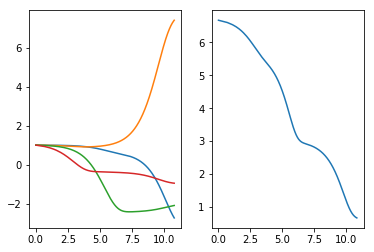
We compare the training data points (green dots) and the predicted outcome of the model (red line). The model matches the polynomial trend of the points perfectly and ignores the noise.
ypred = np.dot(xPF, wOpt)
plt.figure()
plt.scatter(xx, yy, c='g', alpha=0.6)
plt.plot(xx, ypred, 'r', alpha=0.4)
[<matplotlib.lines.Line2D at 0x1c41c915cc0>]
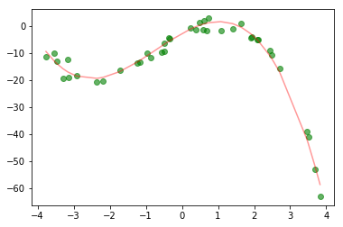
3.1 No regularization to a simpler model
We simplify the model to a 1-degree polynomial by setting xTrain equal to the first-degree polynomial features’ output for the same input array xx.
We do not change the ground-truth output yTrain.
It means the training data still contain the previous 3-degree trend (green dots) but the gradient descent algorithm is going to adjust only two weights (see the wInit shape), as we have two input features (see the second dimension of xTrain).
x2PF = PolynomialFeatures(1).fit_transform(xx)
wInit = np.zeros((x2PF.shape[-1], 1))
xTrain = x2PF.copy()
x2PF.shape, wInit.shape
((40, 2), (2, 1))
We apply the gradient descent algorithm for Nepoch=20000 steps, with a quite small learning rate lr and inactive regularization (lmbd=0).
The bias shifts the line in the negative region, the second weight gives the negative slope to the line.
Nepoch, lr, lmbd = 20000, 0.0001, 0
wEvol, Jevol = gradDescRidge(xTrain, yTrain, wInit, lmbd, lr, Nepoch)
wOpt, Jopt = wEvol[-1,:], Jevol[-1]
print(wOpt)
[-10.64118324 -1.52204685]
We compare the training data points (green dots) and the predicted outcome of the model (red line). The model clearly underfits the polynomial trend of the points perfectly.
ypred = np.dot(x2PF, wOpt)
plt.figure()
plt.scatter(xx, yy, c='g', alpha=0.6)
plt.plot(xx, ypred, 'r', alpha=0.4)
[<matplotlib.lines.Line2D at 0x1c41c82e668>]
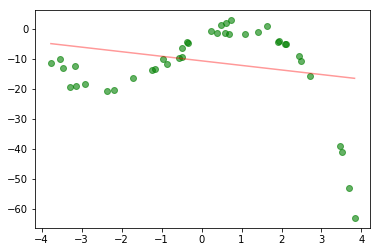
3.2 No regularization to a more complex model
We apply a higher degree model to the dataset without and with regularization. We analyze the training and test errors over increasing model complexity, which is controlled by decreasing values of $\lambda$.
Preventing overflow with scaling
If we apply the polynomial feature transformation to the single input xx and the learning process directly to the new 2D array xHPF we have extremely high values for some columns of the input array. Since the parameter update equation used in the gradient descent algorithm requires the product of the model error with the input array itself, the parameter value will soon diverge to finally exceed the floating limit and thus the overflow.
The final parameter array wOpt will store only NaN values.
xHPF = PolynomialFeatures(8).fit_transform(xx)
wInit = np.zeros((xHPF.shape[-1], 1))
xTrain = xHPF.copy()
Nepoch, lr, lmbd = 20000, 0.001, 0
wEvol, Jevol = gradDescRidge(xTrain, yTrain, wInit, lmbd, lr, Nepoch)
wOpt, Jopt = wEvol[-1,:], Jevol[-1]
Scaling the entire polynomial feature set
To prevent the system to overflow due to very high polynomial degree, one could drastically reduce the learning rate, with the drawback of massively increasing the number of epochs to converge to the optimal solution. One much better idea is to normalize the input features. To this end, we use the class provided in Scikit-learn, the standard scaler.
If we apply the scaling operation to the entire polynomial function, ranging from 0 to the maximum degree, the model will learn the function shape only, but there will be a shift due to the missing bias information.
We set the polynomial degree to 8, scale the entire input feature set (bias included), use the Ridge gradient descent algorithm to identify the optimal parameters, wOpt, display the trend of the 9 model parameters and the loss function and show the comparison of the model response (red line) to the actual data response (green dots).
There is a clear gap between the model curve and the data points, due to the scaling of the bias term, which collapses to 0 and does not allow the corresponding parameter to affect the model response in any way. The loss is indeed very high.
xHPF = PolynomialFeatures(8).fit_transform(xx)
wInit = np.zeros((xHPF.shape[-1], 1))
xTrain = xHPF.copy()
scaler = StandardScaler()
xTrain = scaler.fit_transform(xTrain)
Nepoch, lr, lmbd = 20000, 0.001, 0
wEvol, Jevol = gradDescRidge(xTrain, yTrain, wInit, lmbd, lr, Nepoch)
wOpt, Jopt = wEvol[-1,:], Jevol[-1]
epochs = np.log10(np.arange(0, Nepoch, 10)+1)
plt.figure()
plt.subplot(121)
plt.plot(epochs, wEvol[::10]);
plt.subplot(122)
plt.plot(epochs, np.log(Jevol[::10]));
ypred = np.dot(xTrain, wOpt)
plt.figure()
plt.scatter(xx, yy, c='g', alpha=0.6)
plt.plot(xx, ypred, 'r', alpha=0.4)
[ 0. 9.24279639 -6.48522172 -3.53771229 -2.22419323 -5.90080951
-0.65511474 -6.14563291 -0.18569706]
[<matplotlib.lines.Line2D at 0x1c41cc36d68>]
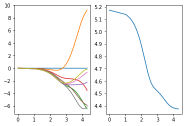
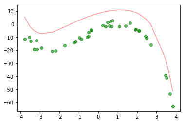
Scaling the input features only
We scale the input features with the Scikit-learn class StandardScaler.
The bias term, $x^0$, is transformed to 0 by the fit_transform() method within scaler.
After the scaling step, we therefore need to reset the first column to 1.
xHPF = PolynomialFeatures(8).fit_transform(xx)
wInit = np.zeros((xHPF.shape[-1], 1))
xTrain = xHPF.copy()
scaler = StandardScaler()
xTrain = scaler.fit_transform(xTrain)
xTrain[:, 0] = 1
We apply the gradient descent algorithm for Nepoch=20000 steps, with a quite small learning rate lr and inactive regularization (lmbd=0).
Nepoch, lr, lmbd = 20000, 0.001, 0
wEvol, Jevol = gradDescRidge(xTrain, yTrain, wInit, lmbd, lr, Nepoch)
wOpt, Jopt = wEvol[-1,:], Jevol[-1]
print(wOpt)
[-12.38143236 9.24279639 -6.48522172 -3.53771229 -2.22419323
-5.90080951 -0.65511474 -6.14563291 -0.18569706]
The figure shows the evolution of the nine weights (left chart) and the loss function (right) along the log axis of the epochs.
epochs = np.log10(np.arange(0, Nepoch, 10)+1)
plt.figure()
plt.subplot(121)
plt.plot(epochs, wEvol[::10])
plt.subplot(122)
plt.plot(epochs, np.log(Jevol[::10]));
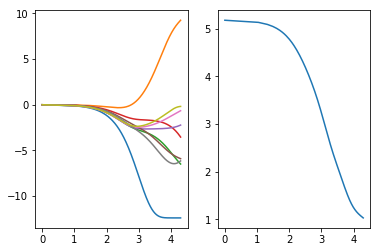
We compare the training data points (green dots) and the predicted outcome of the model (red line). The model matches the data points’ trend but it looks like to be more sensitive to the noise.
ypred = np.dot(xTrain, wOpt)
plt.figure()
plt.scatter(xx, yy, c='g', alpha=0.6)
plt.plot(xx, ypred, 'r', alpha=0.4)
[<matplotlib.lines.Line2D at 0x1c41c954710>]
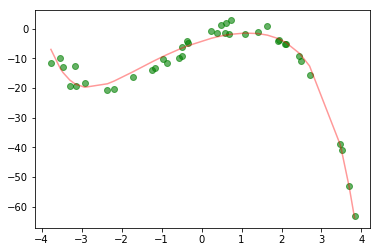
This is confirmed by the test loss, which is very high.
We need to apply the same procedure to the test set inputs xTest, i.e., the polynomial and the scaling transformations and the bias resetting to 1.
xTestH = scaler.transform(PolynomialFeatures(8).fit_transform(xTest[:,1:2]))
xTestH[:, 0] = 1
lossRidge(xTestH, yTest, wOpt.reshape(-1, 1), lmbd=0)
array([ 914.21643086])
4. Applying regularization
We apply the gradient descent algorithm for Nepoch=20000 steps, with a quite small learning rate lr and active regularization (lmbd=1).
Nepoch, lr, lmbd = 20000, 0.001, 1
wEvol, Jevol = gradDescRidge(xTrain, yTrain, wInit, lmbd, lr, Nepoch)
wOpt, Jopt = wEvol[-1,:], Jevol[-1]
print(wOpt)
[-12.38143236 8.09977188 -5.80688968 -3.0680384 -2.32260366
-5.44053601 -0.95948615 -5.9094414 -0.48547816]
The model weights’ seem to be still too high.
The below figure shows the evolution of the nine weights (left chart) and the loss function (right) along the log axis of the epochs.
epochs = np.log10(np.arange(0, Nepoch, 10)+1)
plt.figure()
plt.subplot(121)
plt.plot(epochs, wEvol[::10])
plt.subplot(122)
plt.plot(epochs, np.log(Jevol[::10]));
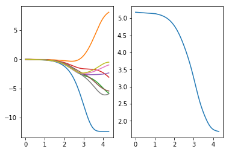
We compare the training data points (green dots) and the predicted outcome of the model (red line).
The model seems to be a bit simpler, as its response moves upward from the data points for x=-2.
ypred = np.dot(xTrain, wOpt)
plt.figure()
plt.scatter(xx, yy, c='g', alpha=0.6)
plt.plot(xx, ypred, 'r', alpha=0.4)
[<matplotlib.lines.Line2D at 0x1c41d044f28>]
The test loss is less, but it is still not enough. To this end, we need a process to automatically seek the best $\lambda$ value.
xTestH = scaler.transform(PolynomialFeatures(8).fit_transform(xTest[:,1:2]))
xTestH[:, 0] = 1
lossRidge(xTestH, yTest, wOpt.reshape(-1, 1), lmbd=0)
array([ 830.47233908])
5. Learning curves for different lambda
We use the method explained in this post to seek for the best $\lambda$ value.
We create a 7-degree polynomial function of the input xx for the training set and of the input xVal for the validation set.
We scale those sets, based on the training set statistics only.
That’s why we first use fit_transform and then transform.
Biases need to be reset to 1.
The Ridge gradient descent algorithm is applied for each regularization factor lmbd and for increasing sizes of the training set.
Recall that the learning curves are built by training and assessing the model performance for increasing sizes of the training set.
degree = 7
xHPF = PolynomialFeatures(degree).fit_transform(xx)
xVal1 = PolynomialFeatures(degree).fit_transform(xVal[:, 1:2])
wInit = np.zeros((xHPF.shape[-1], 1))
xTrain = xHPF.copy()
scaler = StandardScaler()
xTrain = scaler.fit_transform(xTrain)
xVal1 = scaler.transform(xVal1)
xTrain[:, 0] = 1
xVal1[:, 0] = 1
lmbds = [0, 1, 5, 10]
Ntrain = xTrain.shape[0]
Nepoch, lr = 20000, 0.001
Jtrain, Jval = [], []
wOpts = []
for lmbd in lmbds:
for kk in range(1, Ntrain+1):
xTrain_, yTrain_ = xTrain[:kk, :], yTrain[:kk, :]
wEvol, Jevol = gradDescRidge(xTrain_, yTrain_, wInit, lmbd, lr, Nepoch)
wOpt, Jopt = wEvol[-1:,:], Jevol[-1]
Jtrain.append(Jopt)
Jval.append(lossRidge(xVal1, yVal, wOpt.T, 0))
wOpts.append(wOpt)
We take the logarithm of the train/validation losses and plot the learning curves for four different $\lambda$ values in subplots.
trainSizes = np.arange(1, Ntrain+1)
Jtrains = np.log10(np.array(Jtrain).reshape(len(lmbds), -1))
Jvals = np.log10(np.array(Jval).reshape(len(lmbds), -1))
plt.figure(figsize=(10,8))
for kk, lmbd in enumerate(lmbds):
plt.subplot(2, 2, kk+1)
plt.plot(trainSizes, Jtrains[kk, :], 'r', lw=2, label='training')
plt.plot(trainSizes, Jvals[kk, :], 'g', lw=2, label='validation')
plt.ylim([-5, 5])
plt.title('Lambda: {}'.format(lmbd))
plt.legend()
plt.show();
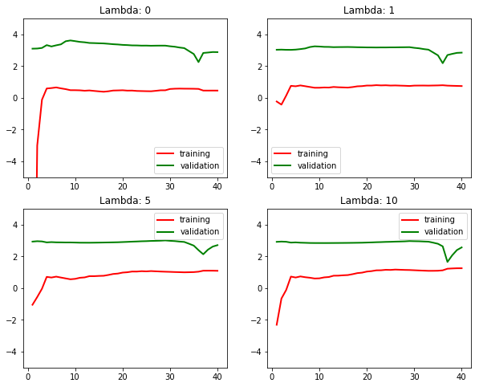
The following figure, instead, compares the training and validation points as blue and green dots, respectively, and the model outcome as a red line for the four cases. The main difference between the first and the last two cases concerns the boundaries of the domain. The regularized models sacrifice the accuracy for those points.
plt.figure(figsize=(10,8))
for kk, (wOpt, lmbd) in enumerate(zip(wOpts, lmbds)):
plt.subplot(2, 2, kk+1)
ypred = np.dot(xVal1, wOpt.T)
plt.scatter(xVal[:,1], yVal, c='g', alpha=0.6, label='actual-validation')
plt.scatter(xx, yy, c='b', alpha=0.6, label='actual-training')
plt.plot(xVal[:,1], ypred, 'r', lw=2, alpha=0.9, label='model')
plt.title('Lambda: {}'.format(lmbd))
plt.legend()
plt.show();
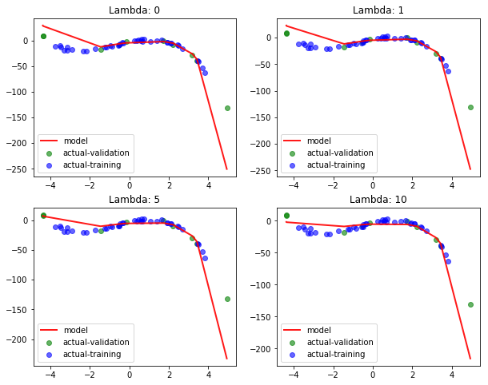
6. Validation curve
We now test various values of the regularization parameter $\lambda$ on the validation set. We select the optimal $\lambda$ value from the validation curve chart.
We use the same procedure as before: define a 7-degree polynomial function, create the training and validation sets, scale the sets and reset the biases to 1, apply the Ridge gradient descent algorithm for each regularization factor lmbd.
degree = 7
xHPF = PolynomialFeatures(degree).fit_transform(xx)
xVal1 = PolynomialFeatures(degree).fit_transform(xVal[:, 1:2])
wInit = np.zeros((xHPF.shape[-1], 1))
xTrain = xHPF.copy()
scaler = StandardScaler()
xTrain = scaler.fit_transform(xTrain)
xVal1 = scaler.transform(xVal1)
xTrain[:, 0] = 1
xVal1[:, 0] = 1
lmbds = [0, 1e-2, 1e-1, 1, 5, 10, 20, 40, 60, 80, 100, 150, 300]
Ntrain = xTrain.shape[0]
Nepoch, lr = 20000, 0.001
Jtrain, Jval, wOpts = [], [], []
for lmbd in lmbds:
wEvol, Jevol = gradDescRidge(xTrain, yTrain, wInit, lmbd, lr, Nepoch)
wOpt, Jopt = wEvol[-1:,:], Jevol[-1]
Jtrain.append(Jopt)
Jval.append(lossRidge(xVal1, yVal, wOpt.T, 0))
wOpts.append(wOpt)
We take the logarithm of the train/validation losses and plot these two trends as a function of $\lambda$.
Nlmbd = len(lmbds)
lambdas = np.arange(Nlmbd)
Jtrains = np.log10(np.array(Jtrain))
Jvals = np.log10(np.array(Jval))
plt.figure(figsize=(10,6))
plt.plot(lambdas, Jtrains, 'r', lw=2, label='training')
plt.plot(lambdas, Jvals, 'g', lw=2, label='validation')
plt.ylabel('Error')
plt.xlabel('$\lambda$')
plt.xticks(lambdas, lmbds)
plt.legend()
plt.show();
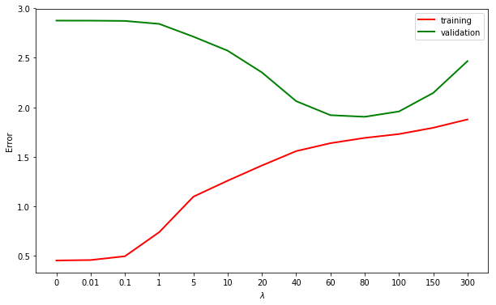
We compare the model curve on the validation set for three values of $\lambda$: (0, 40, 300).
The first value implies no regularization, the second value is optimal in terms of the validation error, the last one is too aggressive, thus deteriorating both training and validation errors.
We select the three model parameter sets associated with the three $\lambda$ values, by using two powerful Pyhtonian techniques: zipping and list comprehension.
lmbds_ = [0, 40, 300]
wOpts_ = [wOpt for wOpt, lmbd in zip(wOpts, lmbds) if lmbd in lmbds_]
plt.figure(figsize=(10,8))
for kk, (wOpt, lmbd) in enumerate(zip(wOpts_, lmbds_)):
plt.subplot(2, 2, kk+1)
ypred = np.dot(xVal1, wOpt.T)
plt.scatter(xTest[:,1], yTest, c='r', alpha=0.6, label='actual-test')
plt.scatter(xVal[:,1], yVal, c='g', alpha=0.6, label='actual-validation')
plt.scatter(xx, yy, c='b', alpha=0.6, label='actual-training')
plt.plot(xVal[:,1], ypred, 'y', lw=2, alpha=0.9, label='model')
plt.title('Lambda: {}'.format(lmbd))
plt.legend()
plt.show();
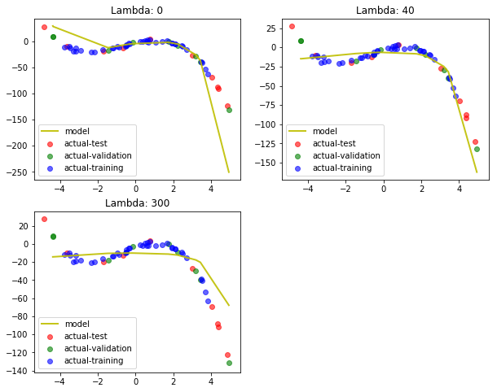
The final test error of the regularized model, whose regularization parameter $\lambda = 40$ has been chosen with respect to the validation set, is here calculated.
xTest1 = PolynomialFeatures(degree).fit_transform(xTest[:, 1:2])
xTest1 = scaler.transform(xTest1)
xTest1[:, 0] = 1
wOpt = [wOpt for wOpt, lmbd in zip(wOpts, lmbds) if lmbd==40][0]
testLoss = lossRidge(xTest1, yTest, wOpt.T, 0)[0]
valLoss = lossRidge(xVal1, yVal, wOpt.T, 0)[0]
print('Log test/validation errors: {:.2f}, {:.2f}'.format(np.log10(testLoss), np.log10(valLoss)))
Log test/validation errors: 2.08, 2.06